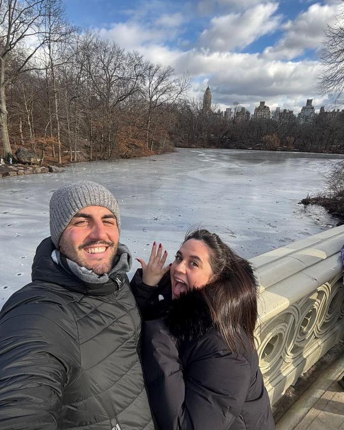
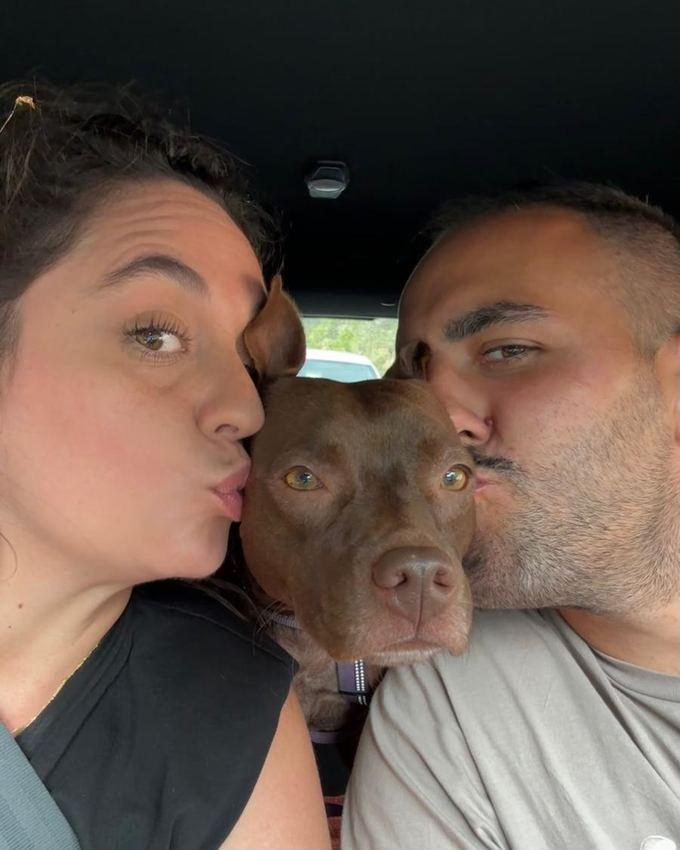
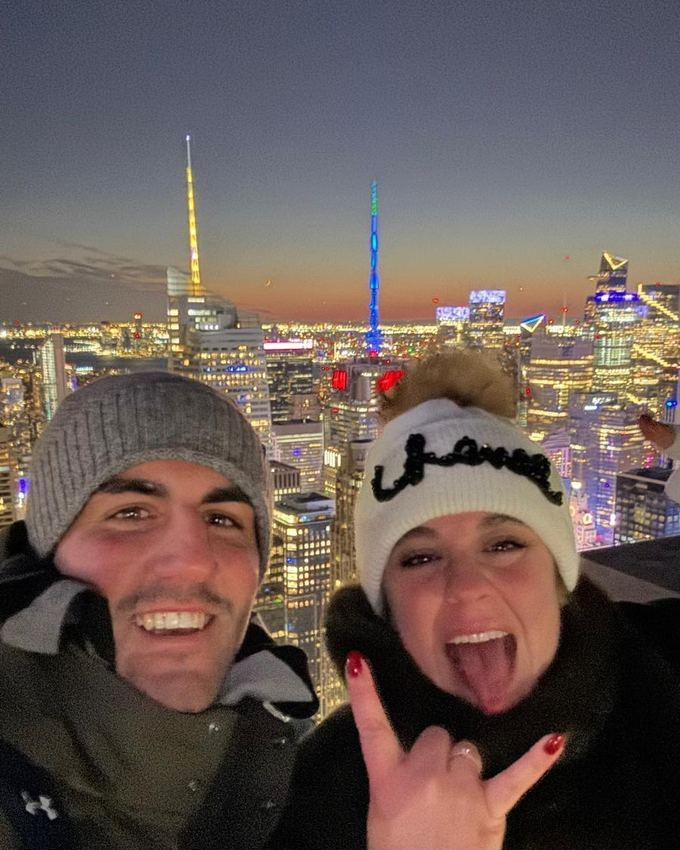

Save the date
Álvaro & Rocío
Viernes 30 de abril de 2027
Finca Villa María · Las Rozas, Madrid
Cómo hemos
llegado hasta aquí
De un rascacielos de Nueva York a un jardín de Las Rozas.
Aquí va vuestra historia. Dos o tres párrafos bastan: cómo os conocisteis, cómo fue la pedida en Nueva York y por qué habéis elegido esta fecha. Escribidlo como habláis, sin solemnidad.
Después de mucho hablarlo, nos casamos un viernes. Sabemos que pedir el día no siempre es fácil, y precisamente por eso nos hace especial ilusión que estéis.



El día,
hora a hora
Todo ocurre en la misma finca, así que no hay traslados entre la ceremonia y la fiesta.
-
17:30
Llegada de invitados
El aparcamiento está dentro de la finca. Entrad y seguid el camino gris hasta el fondo.
-
18:00
Ceremonia civil en los jardines
Al aire libre, entre los jardines del palacete. Si llueve, se traslada al interior.
-
18:45
Cóctel en el pabellón acristalado
Hora y media con vistas al jardín. Las fotos de grupo son aquí, así que no os escapéis lejos.
-
20:30
Cena
Encontraréis vuestra mesa en el seating a la entrada del salón.
-
23:00
Fiesta en las antiguas cocheras
La discoteca está en un edificio aparte, así que quien quiera seguir charlando tiene dónde. Habrá fotomatón durante la noche.
-
01:00
Recena
Para aguantar el último tramo.
-
03:00
Se acaba
Cuatro horas de barra libre y hasta aquí. Organizad la vuelta con tiempo.
Cómo llegar
Finca Villa María
Ctra. de El Escorial, km 0,1
28231 Las Rozas de Madrid
Por carretera
Desde Madrid por la A-6, salida 18, desvío El Escorial–Majadahonda. La finca queda frente al Bus-VAO de Las Rozas.
Desde la M-50, salida 80.
Aparcamiento
Hay parking privado y vigilado dentro de la finca. Entrad y aparcad al fondo, siguiendo el camino gris hasta el jardín.
Antes de venir
Si quieres hacerte una idea del sitio, la finca tiene visita virtual del Palacete: los jardines, el pabellón acristalado y las antiguas cocheras donde será la fiesta.
Si vienes
de fuera
Al ser viernes, mucha gente aprovecha para venir el jueves y volver el domingo. Si es tu caso, esto te puede ahorrar tiempo.
Llegar a Madrid
En avión. Aeropuerto Adolfo Suárez Madrid-Barajas. Desde allí, a Las Rozas hay unos 40 minutos en coche por la M-40 y la A-6.
En tren. Estaciones de Chamartín o Atocha. Cercanías C-8 y C-10 llegan a Las Rozas y El Pinar, y desde allí un taxi corto hasta la finca.
En coche. Salida 18 de la A-6, dirección El Escorial–Majadahonda.
Dónde dormir
Estamos cerrando con la finca una lista de hoteles cercanos y, si conseguimos tarifa acordada, la publicaremos aquí con el código de reserva.
Mientras tanto, las zonas más cómodas son Las Rozas centro y Majadahonda, ambas a menos de diez minutos en coche. Escríbenos y te orientamos.
Qué hacer el fin de semana
La sierra queda a un paso: El Escorial y su monasterio están a veinte minutos, y Cercedilla o Navacerrada a menos de una hora si te apetece andar.
Y el centro de Madrid está a media hora larga en coche o en Cercanías.
Volver a casa
La fiesta termina sobre las tres de la madrugada. La finca está junto a la A-6, así que hay cobertura de coches, pero a esa hora todos pediremos a la vez.
Pide el coche con quince o veinte minutos de antelación.
Agrupaos por zonas de Madrid: sale mejor y hay menos espera.
Si conduces, hay refrescos y agua toda la noche en la barra.
Qué ponerse
Etiqueta formal, sin más reglas. Ven cómodo, que la noche es larga.
La ceremonia es en el jardín, sobre césped, así que el tacón fino lo va a pasar mal. Y aunque sea finales de abril, en Las Rozas refresca al caer la noche: una chaqueta o un chal se agradecen.
Si quieres tener un detalle
Lo que de verdad nos importa es que vengas. Pero si además te apetece regalarnos algo, te dejamos aquí el número de cuenta.
ES00 0000 0000 0000 0000 0000
Copiado
Confirma tu asistencia
Nos ayuda muchísimo saberlo con tiempo: la finca nos pide los números y las alergias por escrito. Cuéntanos también si vienes con niños o si necesitas hotel.
Necesitamos tu respuesta antes del 15 de febrero de 2027.
Tarda menos de un minuto. Si te lías o prefieres decírnoslo por WhatsApp, escríbenos al 646 16 43 11.
Preguntas que
nos habéis hecho
Si falta alguna, escríbenos y la añadimos.
¿Se puede tirar arroz a la salida?
Arroz, confeti y legumbres no están permitidos en la finca, y la pirotecnia está prohibida por normativa de la Comunidad de Madrid. Pétalos naturales sí, y los habrá preparados allí mismo, así que no hace falta que traigas nada.
¿Hay sitio para aparcar?
Sí, parking privado y vigilado dentro de la finca. Aparca al fondo, siguiendo el camino gris.
Vengo con niños, ¿hay algo para ellos?
Sí, hay menú infantil. Dinos cuántos vienen y sus edades en el formulario para que la cocina lo tenga en cuenta.
Soy celíaco, vegetariano o tengo alergias
La cocina de la finca prepara menús adaptados sin problema. Solo necesitamos que lo indiques en el formulario, cuanto antes mejor.
¿A qué hora termina?
Sobre las tres de la madrugada. Son cuatro horas de barra libre y al ser viernes no se puede alargar más, así que aprovecha.
¿Se puede fumar?
En los espacios cerrados no. En los jardines y las zonas exteriores, sí.
¿Cómo vuelvo a Madrid?
Con Uber, Cabify, Bolt o taxi. Tienes los enlaces en el apartado Volver a casa.
¿Puedo hacer fotos?
Todas las que quieras. Solo te pedimos que durante la ceremonia dejes el pasillo libre al fotógrafo. Y habrá fotomatón durante la fiesta, así que llévate tu tira.
Después de la boda
Aquí colgaremos la galería de fotos cuando esté lista, las tiras del fotomatón y un sitio donde puedas subir las tuyas. Vuelve a pasarte por aquí en unas semanas.